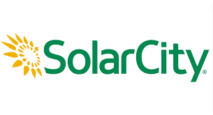
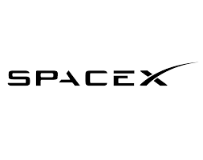
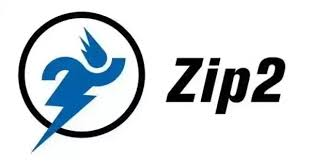
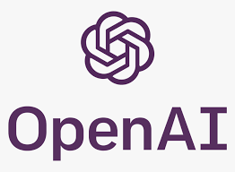

Elon Reeve Musk
When something is important enough, you do it even if the odds are not in your favor.TimeLine Of Elon
• June 28, 1971: Born in South Africa
• Age 12: Creates and writes a video game called Blastar; sells it for the equivalent of $500
• 1988: Graduates from Pretoria Boys High School with distinctions in science and computer studies
• 1989 to 1991: Attends college at Queen’s University in Kingston, Ontario. Then transfers to the University of Pennsylvania; completed a BS in Economics (Wharton) and a BA with a major in physics
• 1995: Moves to Silicon Valley; defers graduate program in applied physics and materials science at Stanford University to join the Internet boom
• February 1999: Sells Zip2 to Compaq, the personal computer company, for $307 million, of which $22 million went to Musk. Then forms X.com, which in 2000 morphs into PayPal
• July 2002: eBay acquires PayPal for $1.5 billion in stock, of which $165 million goes to Musk
• 2002: Becomes an American citizen
• 2002: Founds SpaceX9
• 2004: Invests in Tesla Motors
• 2007: SpaceX wins $1.6 billion contract to bring cargo to the International Space Station
• October 2008: Becomes Tesla’s CEO
• Jun 29, 2010: Tesla IPO
• May 2012: SpaceX becomes the first commercial vehicle to deliver a load of supplies to the International Space Station.
• June 2012: Tesla begins deliveries of the all-electric Model S
• August 2013: Releases sketch and concept of the Hyperloop
• 2014: Announced Open-Sourcing Tesla Technology
In 2014, Musk announced that Tesla would allow its technology patents to be used by anyone in good faith in a bid to entice automobile manufacturers to speed up development of electric cars.
• Announced Hyperloop design competition
In June 2015, Musk announced a design competition for students and others to build Hyperloop pods to operate on a SpaceX-sponsored mile-long track in a 2015–2017 Hyperloop pod competition. The track was used in January 2017, and Musk also started building a tunnel.
• In December 2015, Musk announced the creation of OpenAI, a not-for-profit artificial intelligence (AI) research company. OpenAI aims to develop artificial general intelligence in a way that is safe and beneficial to humanity.
• In 2016, Musk co-founded Neuralink, a neurotechnology startup company to integrate the human brain with artificial intelligence.
• Hyperloop One, a company participating in Hyperloop competition, had announced that it had done its first successful test run on its DevLoop track in Nevada on July 13, 2017. It lasted 5.3 seconds, reaching a top speed of 70 mph.

Elon wikipedia - Elon Musk



